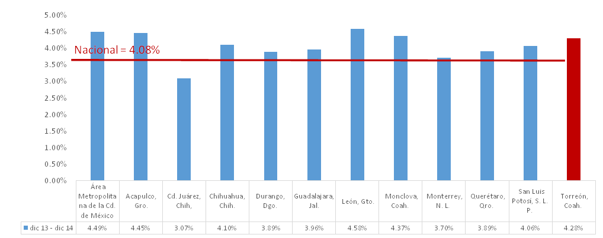
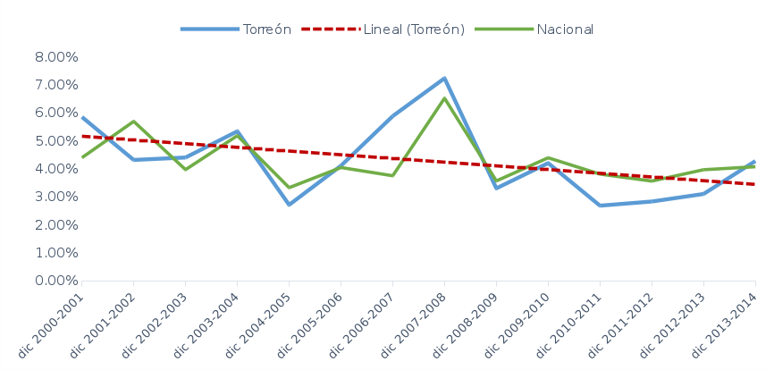

Durante 2014 el municipio de Torreón, Coahuila tuvo una inflación de 4.28%, tasa cercana a la nacional de 4.08%. Otras ciudades de la república como Monclova, León y Acapulco tuvieron tasas inflacionarias de 4.37%, 4.58% y 4.45% respectivamente:
Cambio porcentual en el INPC diciembre 2013 - diciembre 2014

- Fuente: Elaborada por IMPLAN con datos de INEGI.
En el caso de Torreón el precio total de la canasta básica, la cual incluye 82 de los 283 productos usados en el cálculo de la inflación, subió principalmente por el precio de los electrodomésticos, las medicinas, y algunos alimentos y servicios de vivienda como la electricidad y el gas. Los diez productos que sufrieron mayores incrementos se listan a continuación:
| Lugar | Producto/Servicio | Precio promedio en diciembre 2013 | Precio promedio en diciembre 2014 |
|---|---|---|---|
| 1 | Reproductores de video (1 unidad) | $ 993.88 | $ 2,290.25 |
| 2 | Licuadoras (1 unidad) | $ 740.50 | $ 1,185.23 |
| 3 | Galletas (1 Kg) | $ 56.87 | $ 78.78 |
| 4 | Gas doméstico natural (costo/m3) (a) | $ 262.91 | $ 345.63 |
| 5 | Focos (1 pieza) | $ 47.95 | $ 62.23 |
| 6 | Carne de res (1 Kg) | $ 95.00 | $ 122.79 |
| 7 | Refrescos envasados (1 l) | $ 11.07 | $ 13.67 |
| 8 | Vísceras de res (1 Kg) | $ 28.84 | $ 35.53 |
| 9 | Chiles envasados, moles y salsas (1 Kg) | $ 41.37 | $ 48.90 |
| 10 | Azúcar (1 Kg) | $ 12.20 | $ 14.07 |
- (a) Precio medio facturado, incluye distribución y servicio.
- Fuente: Elaborado por IMPLAN con datos de INEGI.
En cuanto al costo mensual de la electricidad en el consumo promedio de una vivienda clase media de 250 Kwh y 500 kwh, subió 3.96% y 3.91% respectivamente.
Otros productos de la canasta básica como la tortilla de maíz, el jabón para lavar y la pasta dental redujeron sus precios durante el 2014. Los diez productos con mayor disminución en su precio promedio fueron los siguientes:
| Lugar | Producto/Servicio | Precio promedio en diciembre 2013 | Precio promedio en diciembre 2014 |
|---|---|---|---|
| 1 | Papel higiénico y pañuelos desechables (1 Pag. 4 rollos) | $ 36.97 | $ 20.84 |
| 2 | Servicio telefónico local fijo (b) | $ 726.52 | $ 511.84 |
| 3 | Gelatina en polvo (1 Kg) | $ 333.36 | $ 245.69 |
| 4 | Frijol (1 Kg) | $ 21.95 | $ 16.42 |
| 5 | Servicio de telefonía móvil (c) | $ 105.54 | $ 88.54 |
| 6 | Estufas (1 unidad) | $ 7,185.50 | $ 6,060.98 |
| 7 | Planchas eléctricas (1 unidad) | $ 515.75 | $ 446.88 |
| 8 | Material escolar (1 pieza) (d) | $ 24.78 | $ 21.54 |
| 9 | Dermatológicos (1 pieza) | $ 510.14 | $ 446.33 |
| 10 | Frijol procesado (1 Kg) | $ 28.29 | $ 25.40 |
- (b) Costo promedio ponderado de una muestra de prepago y pospago.
- (c) Costo promedio de una muestra de telefonía doméstica y pública.
- (d) Promedio entre artículos como plumas, cuadernos, borradores, lápices, por pieza.
- Fuente: Elaborado por IMPLAN con datos de INEGI.
A pesar del aumento en la tasa inflacionaria en el último año, la inflación del municipio tiene tendencia a disminuir en el largo plazo, como se muestra en la siguiente gráfica de la inflación anual del municipio desde el año 2000:
Inflación anual

Un incremento en la inflación como el que sufrió Torreón en 2014 no es necesariamente una señal negativa pues puede ser causada por exceso de dinero en la economía. La apertura de nuevas empresas, el aumento en la inversión y mayor gasto por parte del gobierno crean un excedente en el sistema generando una mayor demanda de bienes y servicios, lo que aumenta el precio de los productos ofrecidos, es entonces cuando el alza en los precios incentiva la producción y disminuye el desempleo.
El ejemplo de esto podemos verlo claramente en el municipio de Torreón, pues a pesar de la inflación, la tasa de desempleo abierto permaneció a la baja y los empleados asegurados aumentaron. Sin embargo recordemos que debe cuidarse la relación de la inflación con el ingreso pues si los salarios no aumentan de acuerdo a los precios el poder adquisitivo de las personas se reduce y la planta productiva se ve afectada.